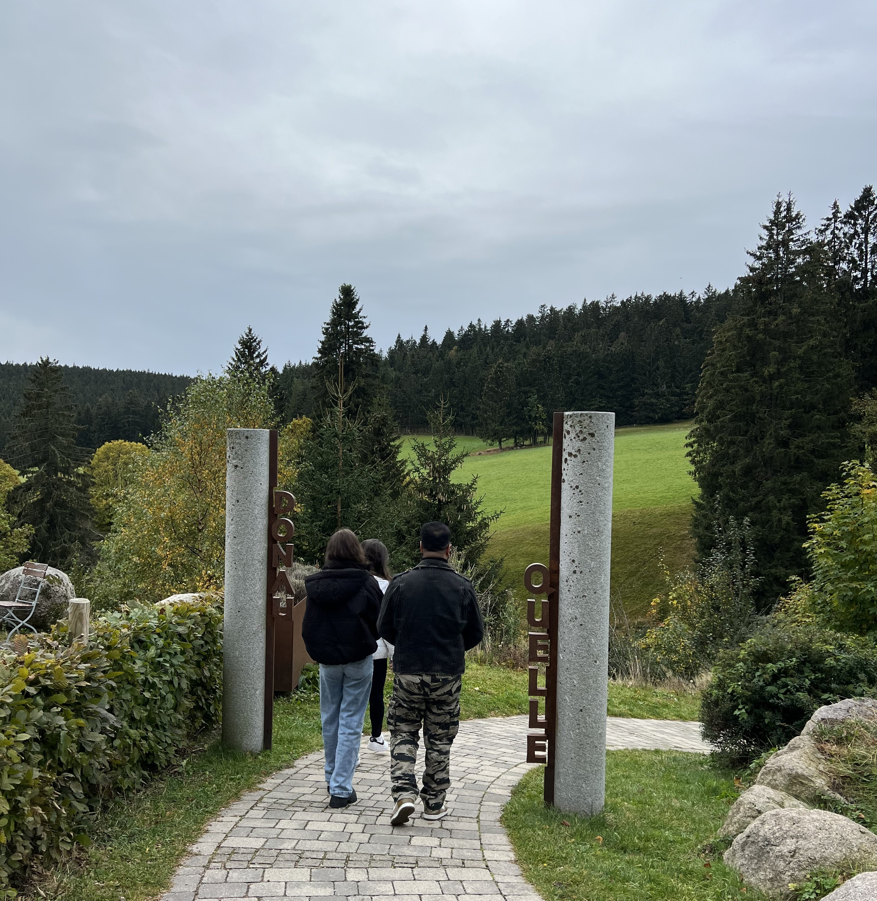
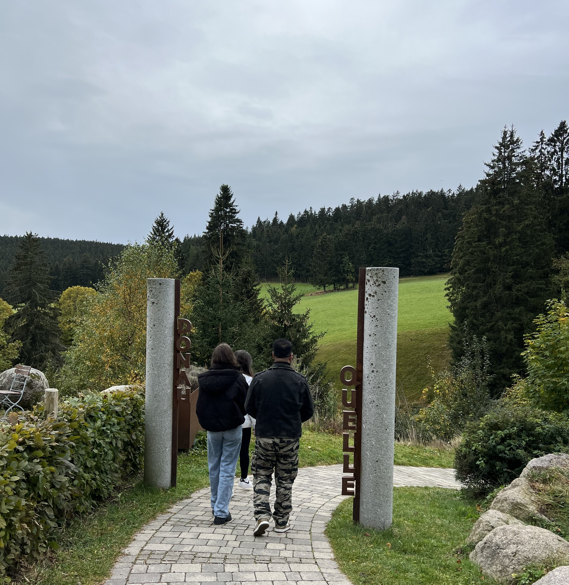

Source of the breg
by Michelle
Discovering the source of the Breg River in Germany is like stumbling upon a nature lover's paradise, where the possibilities for exploration and adventure seem boundless.For the adventurous spirits in your group, the area around the Breg's source offers opportunities for hiking and nature walks. The trails wind through enchanting forests and reveal breathtaking views, making it an ideal setting for those seeking an adrenaline boost and a connection with the great outdoors.
You can also consider packing a picnic and spreading out a blanket near the riverbank. The soothing sounds of the flowing water create a perfect ambiance for relaxation and camaraderie. Sharing stories and laughter while surrounded by the tranquility of the Breg becomes a memory that lingers long after the day has ended.
For those with an artistic flair, the source of the Breg is an inspiring backdrop for sketching, painting, or photography. The interplay of light and shadow, coupled with the vibrant colors of the landscape, provides an endless canvas for creative expression.
As the day unfolds, consider exploring the nearby villages and towns, discovering local cuisine, or interacting with the friendly locals. Engaging in the cultural aspects of the region adds depth to the experience, enriching your understanding of the place and its people.
To go there i would suggest you to go with car and to enjoy the way there as there are some kind of animals that are worth seeing.
 
